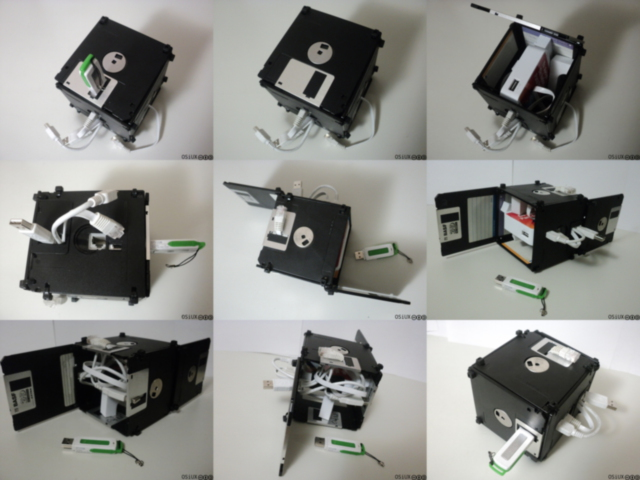
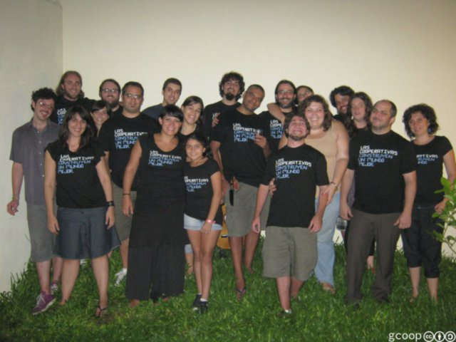
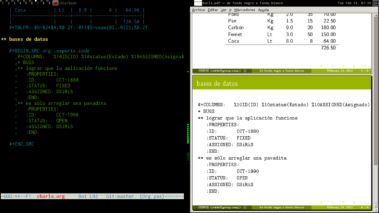
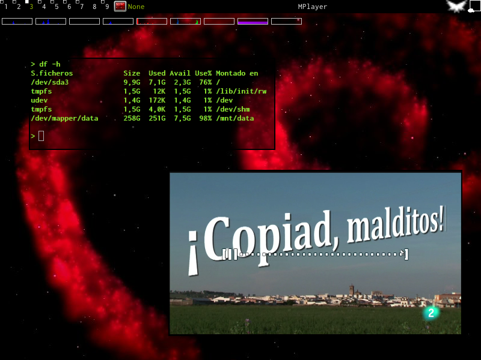

ABSOLUTELLY NO WARRANTY | CC-BY-SA | OSiUX | blog | docs
** 2013
31/MAY
01/FEB
** 2012
15/OCT
29/SEP
07/SEP
30/AGO
27/AGO
06/JUL
05/JUL
30/JUN
26/JUN
15/JUN
14/JUN
13/JUN
01/JUN

28/MAY
25/MAY
24/MAY
23/MAY
18/MAY
05/MAY
28/ABR
05/MAR
29/FEB
17/FEB

14/FEB

** 2011
29/DIC
25/NOV
10/NOV
05/NOV
24/OCT
16/JUL

03/JUL
15/MAR
03/FEB
Author: Osiris Alejandro Gómez (osiux@osiux.com)
Date:
Emacs 24.3.1 (Org mode 8.0.3)
Validate